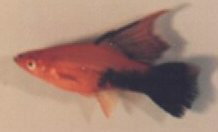

|
Zeichnungsmuster halbschwarz - quer bei (Xiphophorus helleri) ein Bericht von Günther Schramm
|
||
| Viele werden sich fragen, halbschwarz - quer was ist das, solche Fische habe ich noch nie gesehen. Und doch gibt es sie. Seit 20 Jahren beschäftige ich mich mit dieser seltenen und schwierigen Zuchtform. Wie ist dieses Zeichnungsmuster entstanden ? Jacobs schreibt in seinem Buch, "Die lebendgebährenden Fische der Süßgewässer", wie folgt.: "Frankfurter Kreuzung", rot - schwarzer Helleri (Red - Jet - Swordtail) Der "rot - schwarze Helleri" wurde auf zwei verschiedenen Wegen gezüchtet. Zuerst wurde er als "Frankfurter Kreuzung" bekannt. Darüber berichtete Wilhelm Schreitmüller (1870 - 1945) erstmalig in der "Wochenschrift für Aquarien- und Terrarienkunde", 1929 S. 609. Hiernach hatte der Frankfurter Züchter Ph. Stettner durch Kreuzung eines roten Männchens von Xiphophorus maculatus mit einem Weibchen vom grünen Xiphophorus helleri und weiterer ständiger Auslese der Nachzuchten eine Spielart entwickelt, die an Kopf, Brust und dann bis zur ungefähren Rumpfhälfte die rote Färbung des Stammvaters aufwies, während die Unterpartie des Körpers tiefschwarz war. Den Übergang zwischen schwarz und rot bildete eine feine schwarze Sprenkelung. Die Schuppen waren mit metallisch - grün schimmernden Pünktchen übersät, der Bauch zeigte eine orange- rote Tönung, die Iris weißlichgrün, Flossen, mit Ausnahme der Brustflossen, waren dunkel gesprenkelt. Über einen anderen "rot - schwarzen Helleri" berichtete der amerikanische Ichthyologe und Genetiker Dr. Myron Gordon im "Tropical Fish Hobbyist", 1956, Heft 5. Hierbei wurde in vieljährigem Einkreuzen aus der grünen Wildform von Xiphophorus helleri und dem, im gleichen Gebiet verbreiteten, Xiphophorus montezumae ebenfalls eine schwarz - rote Farbkombination herausgezüchtet. Nach Gordon sind die Schwanzflossen und der hintere Körperabschnitt, seines "rot - pechschwarzen Schwertträgers", völlig schwarz, wogegen der übrige Körper in einem leuchtenden Rot erstrahlt. Das Schwert ist, im Gegensatz zu anderen Helleri - Kreuzungen und den, bei der Züchtung dieser Farbform auftretenden Vorstufen, sehr lang und schmal. Bei optisch gleicher rot - schwarz Färbung kann man die amerikanische "rot - pechschwarze" Kreuzung durch das längere Schwert von der "Frankfurter Kreuzung" unterscheiden. Dagegen hat Stallknecht in seinem Buch "Lebendgebährende Zahnkarpfen" folgende Auf- fassung zu diesem Thema. Als sensationell wurde Mitte der 50er Jahre eine Schwertträger - Zuchtform empfunden, die man im Handel, mit welcher Begründung weiß heute niemand, als Frankfurter Schwertträger bezeichnete. Auf roter Grundfärbung war die hintere Körperhälfte sattschwarz, die scharfe Trennung lag etwa unter der Mitte der Rückenflosse. Es gelang nicht, aus diesen Fischen erb- feste Nachkommen zu gewinnen, so daß nur wenige Abbildungen dokumentieren, wie diese attraktive Zuchtform ausgesehen hat. Dennoch haben sich einige Züchter bemüht, aus vorn schwach gezeichneten Längsband - Halbschwarzen, durch sorgfältige Auslese, markant farblich quergeteilte Schwertträger und Platys zu erzielen. Obgleich recht gute Einzelstücke auf Ausstellungen gezeigt werden konnten, stand der Aufwand in keinem Verhältnis zur Mühe, weil geradezu Unmengen von Jungfischen schlechter Längsband - Qualität aufgezogen werden mußten, deren schlechteste Vertreter dann die besten quergeteilten Exemplare waren. Eine erbliche Fixierung gelang bisher nicht. - Zitat Ende - Ich habe im Mitteilungsblatt der "ZAG Lebendgebährender Zahnkarpfen", 1978 Heft 1, schon einmal meine Erfahrungen mit dieser Zuchtform veröffentlicht.Gesammelte Erfahrungen aus weiteren 16 Jahren veranlassen mich erneut, dazu einige Aus- führungen zu machen. Die bei Jacobs aufgezeigten Zuchtwege sind heute schwer nachvollziehbar aber durchaus denkbar, wobei ich mehr an eine Mutation glaube, welche bei Zuchtversuchen mit unter-schiedlichen Farbschlägen entstanden ist.Dagegen halte ich den Zuchtweg von Stallknecht für völlig aus der Luft gegriffen. Als Züchter beider Farbvarianten, einmal den halbschwarz - quer und zum anderen den halb- schwarz - längs (tuxedo), kann ich beweisen, daß bei Kreuzungen dieser Farbschläge unter-einander, das Zuchtziel beider Zeichnungsmuster verheerende Folgen hätte. Abgesehen davon, daß der bei diesen Arten manchmal vorkommende Farbkrebs (Melanosarkom) verstärkt auftreten würde. Mir ist in meiner langen Praxis, als Züchter dieser Fische, nichts bekannt, daß bei den Nachzuchten der Halbschwarzen jemals Tiere mit Längsbandzeichnung (tuxedo) dabei gewesen wären. Das Zeichnungmuster halbschwarz - quer ist in jedem Fall dominant und damit erbfest. Die gewünscht Zeichnung läßt sich somit auf alle Grundfarben übertragen. Die Schwierigkeit besteht allerdings darin, daß eine scharfe Querteilung nur sehr wenig Tiere auf- weisen. Noch schwieriger ist es, ein gleichaussehendes Paar zu erhalten. Deshalb sind diese Fische auf den Leistungsausstellungen nur selten zu sehen. Bemerkenswert ist auch, daß relativ schlecht gezeichnete Fische jederzeit Spitzentiere bei den Nachzuchten hervorbringen können. Im Eurostandard für Xipho - Zuchtformen ist diese Farbspielart so deklariert, daß von der Schwanzwurzel bis hin zur Körpermitte (1. Flossenstrahl der Rückenflosse) eine scharfe Querteilung erfolgt. Die Flossen bleiben davon unberührt. Man kann diese Zuchtform natürlich beliebig verfeinern. So ist es mir in den vergangenen Jahren gelungen, Fische dieses Farbschlages mit roten Flossen zu züchten. Besonders schön sehen solche Tiere bei der Grundfarbe gelb aus. Wagtailzeichnungen können ebenfalls übertragen werden. Damit wird erreicht, daß, zu der halbschwarz Färbung, die Flossen in tiefem Schwarz erscheinen. Wenn man die ohnehin sehr wertvollen Tiere noch in den Sonderflossenformen (Lyratail, Deltaflosser) züchtet, sind solche Fische kaum an Schönheit zu überbieten.Eigentlich sollte gerade diese Zuchtform eine Herausforderung für viele Züchter sein, sich mit diesen Tieren zu beschäftigen. Leider ist dem nicht so ! Das liegt, und dabei gebe ich Stallknecht recht, hauptsächlich daran, daß bei den vielen Nachzuchten nur sehr wenige als ausgesprochene Spitzentiere angesehen werden können. Nun muß ich dazu die Frage stellen: "Wer, wenn nicht wir, die Freunde der Zuchtformen, soll denn solche seltene Zuchtformen erhalten und vermehren? "Sollte es uns nicht gelingen, diese Fische in einer breiten Basis zu züchten, werden sie genauso verschwinden, wie einst die "Blutenden Herzen" bei den Xiphophorus maculatus. Nun noch einige Tips zur Zucht. Zuerst sollte man dem Umstand Rechnung tragen, daß diese Zuchtform dazu neigt, recht groß zu werden. Größen zwischen 10 und 12 cm sind keine Seltenheit. Wenn man bedenkt, daß Xiphophorus helleri eine maximale Lebenserwartung von 24 Monaten erreichen, kommt es vor, daß Männchen bis zu ihrem Lebensende wachsen und dabei nie geschlechtsreif werden. Neben solchen Tieren gibt es natürlich viele Zucht- taugliche. Es hat sich bei der Bekämpfung von Farbkrebs (Melanosarkom) als günstig erwiesen, so oft als möglich einfarbige Tiere einzukreuzen. Dadurch ist in den letzten 10 Jahren der Farbkrebs nur noch selten in Erscheinung getreten. Bei Kreuzungsversuchen von zwei mal Halbschwarz kommt man schneller zum Zuchtziel. Mit Rücksicht auf unsere Tiere und bei der vorbeugenden Bekämpfung des Farbkrebses (Melanosarkom) rate ich jedoch davon ab. Eine mittlere Wasserhärte und ein PH - Wert um 7 sorgt für das nötige Wohlbefinden. Es sollte darauf geachtet werden, daß der PH - Wert nicht unter 6 fällt. Diese Wasserverschlechterung wird nicht vertragen. Ein wöchentlicher Teilwasserwechsel und häufiges Reinigen des Filtermaterials wirken positiv auf die Wasserqualität. Meine Fische erhalten, so oft und so lange es im Jahr möglich ist, lebendes Tümpelfutter, Flockenfutter, Rinderherz und Frostfutter ergänzen den Speisezettel. Wichtig ist, daß neugeborene Jungfische noch am gleichen Tag ihr erstes Lebendfutter erhalten. Dazu eignen sich bestens Salienenkrebschen. Setzt man zu spät mit der Fütterung ein, erfolgen Hungerschäden, welche nicht mehr auf- geholt werden können. Eine rechtzeitige Vorauslese nach Qualitätsmerkmalen sollte spätestens nach drei bis vier Wochen erfolgen. Die brauchbaren Tiere erkennt man schon sehr zeitig. Sie sollten gesondert, in großen Aquarien, bei mäßigem Besatz aufgezogen werden. Bleibt die Hoffnung, daß ich durch meine Ausführungen das Interesse für diese seltene und schöne Zuchtform geweckt habe. Literaturhinweis: Kurt Jacobs "Die lebendgebährenden Fische der Süßgewässer" 1969 Helmut Stallknecht "Lebendgebährende Zahnkarpfen" 1989
|
||
|
 Weibchen rot halbschwarz Kreuzungs versucht mit dem Zeichnungsmuster Wagtail |
Der gleiche Kreuzungsversuch mit der Körpergrundfarbe gelb
|
Hier wird ein halbschwarzer Helleri gezeigt. ohne das Wagtailzeichnungsmuster mit roten Flossen |
|
Weibchen gelb Lyratail |
Männchen halbschwarz rot hochflossig Wagtail |
|
| Zuchtbericht und Fotos von Günther Schramm | ||